KUMA Lab. / Works
Stories
小説、及び生成AIを利用した映像等のメディア作品制作活動
Back to Works →Stories Archive
作品・実践一覧
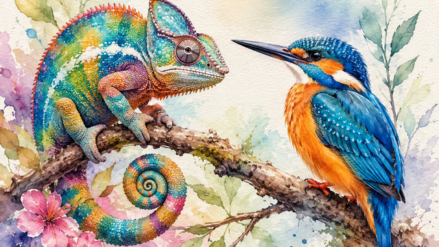
カラフル
Neu world掲載の短編作品。脳科学と色彩をテーマにした短編小説
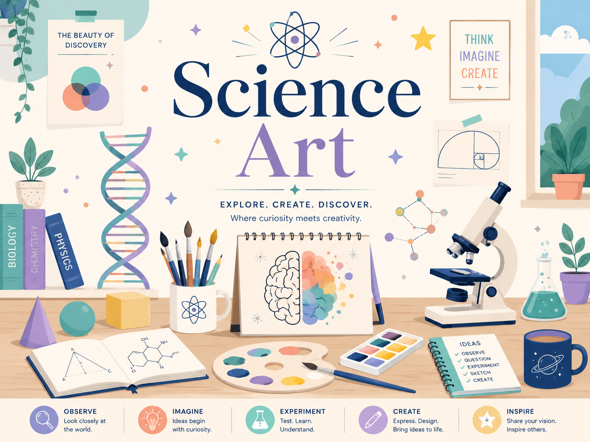
Voice of Muon
素粒子ミューオンを介した地球との対話をテーマに、未知なる自然に挑む科学者の情熱を小説と楽曲で描くAcademimic作品。
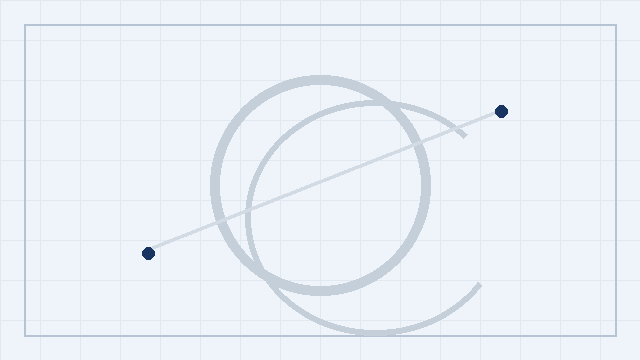
ポラリス
第11回日経「星新一賞」一般部門優秀賞受賞作『ポラリス』。拡張人工毛髪と記憶保存をめぐる、科学技術と人間の記憶・アイデンティティを扱ったSF短編。
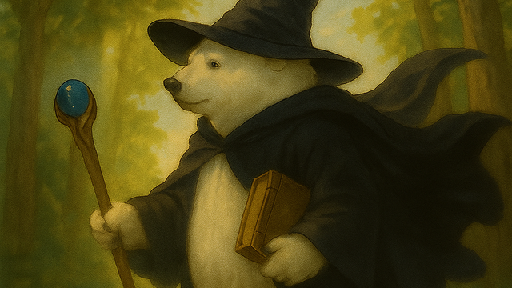
サンドキャッスルTRPG：リプレイ小説
国立天文台のサンドキャッスルTRPG「ブリークウッドの塔」をもとにした、前日譚のリプレイ小説。
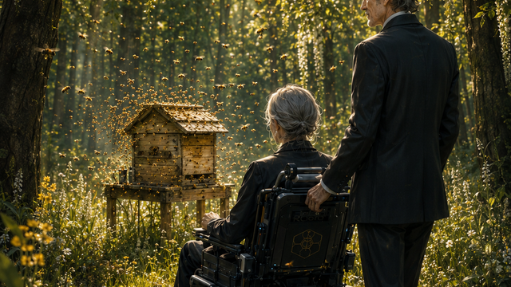
蜜から灰へ
記憶移植や家族関係を軸に、未来社会の選択を描くSFプロトタイピング短編。
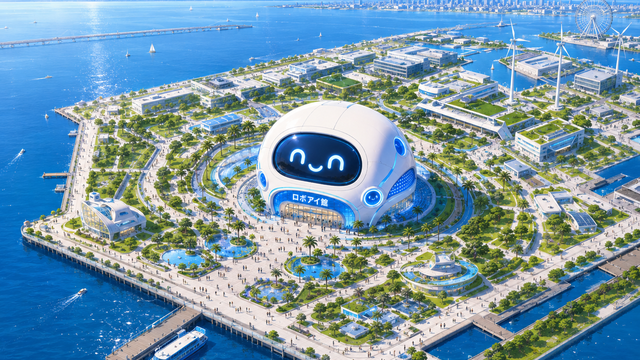
みをつくしの人形遣いたち（大阪SFアンソロジー：OSAKA2045 収録）
2045年の大阪・夢洲の科学館における、AIとサイエンスコミュニケーターの物語。
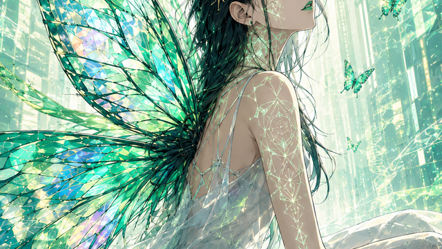
フェノティピック・プラスティシティ
anon press 掲載のSF短編『フェノティピック・プラスティシティ』。
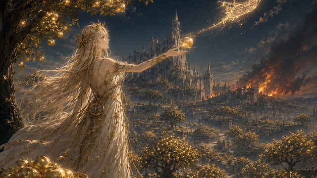
イズンの果樹園
オンラインzine call magazine vol.41 掲載の短編小説
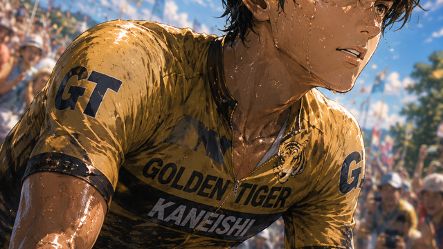
ダムナティオ・メモリアエ
遺伝子ドーピングと記憶をめぐる、瀬戸内の島を舞台にしたSF短編。（第三回かぐやSFコンテスト参加作品）
月と蛍、静夜の思い／ 群游する青
第2回かぐやSFコンテスト選外佳作作品。深海と記憶をめぐるSF短編。
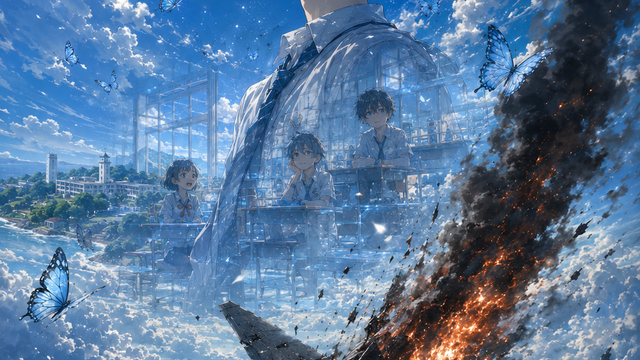
アサギユメミシ
pixiv掲載の小説作品。外部サイトで全文を閲覧できます。（第三回日本SF作家クラブ小さな小説コンテスト参加作品）
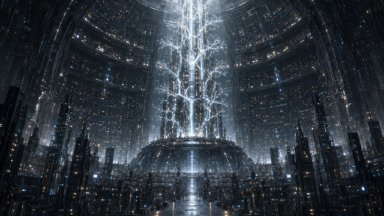
R.U.R.：Robots' Universal Rules
pixiv掲載の小説作品。外部サイトで全文を閲覧できます。（第二回日本SF作家クラブ小さな小説コンテスト参加作品）
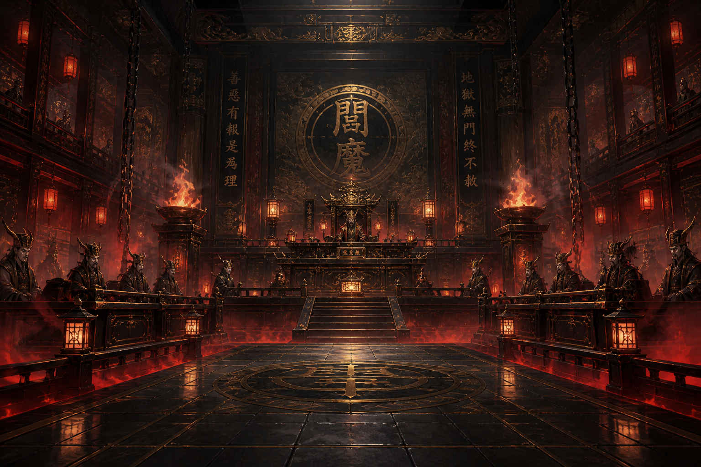
因果リツコの地獄裁判
後日公開予定。
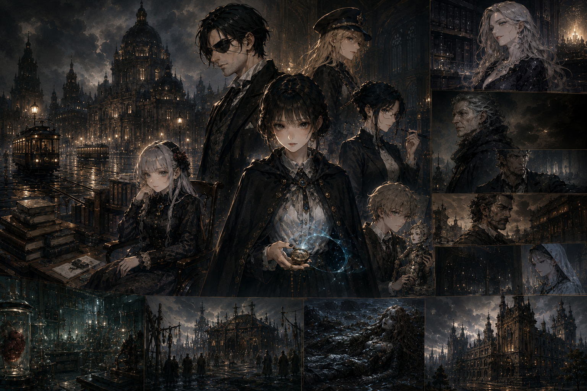
アルス・コンビナトリア
後日公開予定。
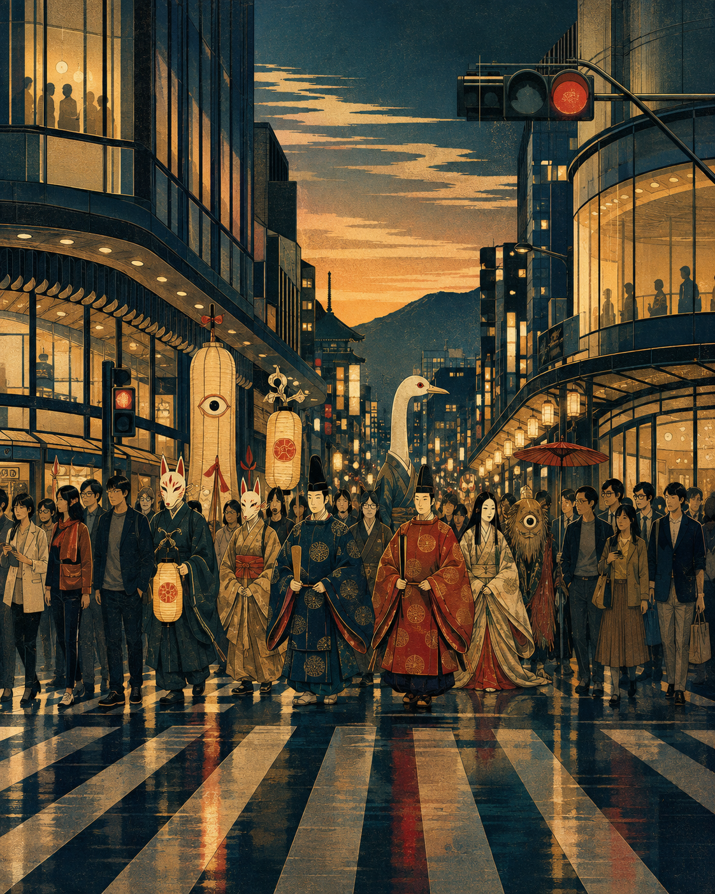
Kyoto Hallucinations
後日公開予定。
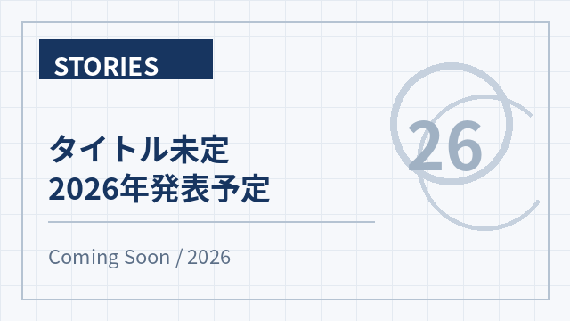
タイトル未定（2026年発表予定）
後日公開予定。
Team：KumAIwao（AIとの共創作品）
生成AIを活用したメディア作品・物語作品